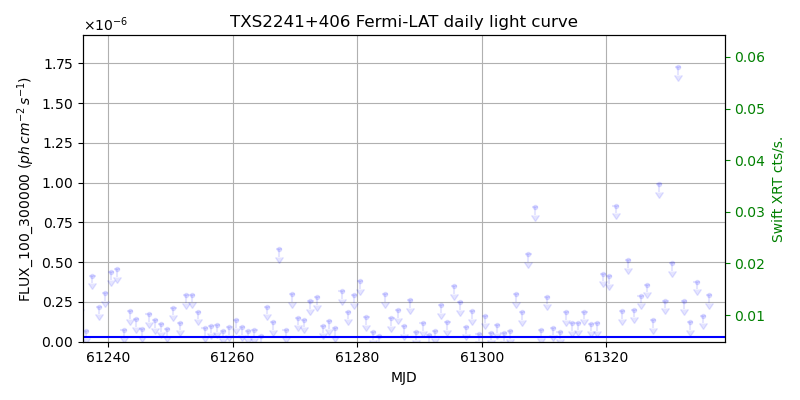
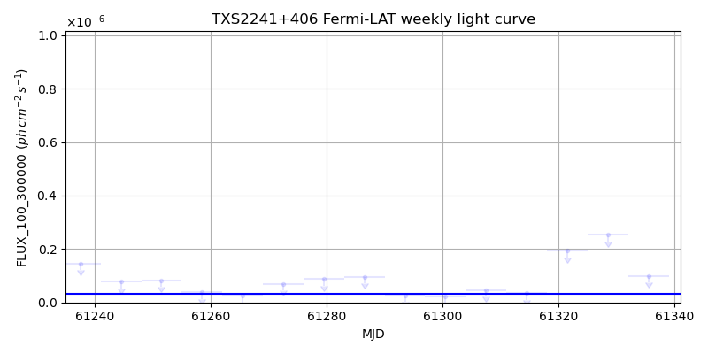
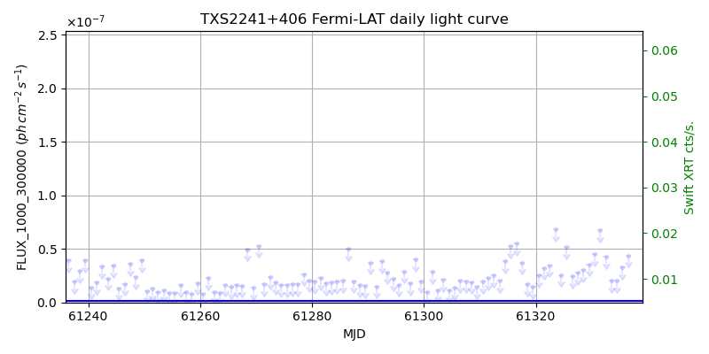
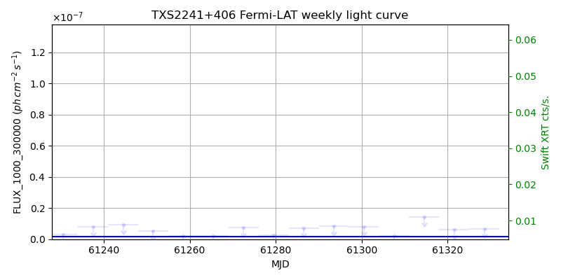

LAT Lightcurve site: https://fermi.gsfc.nasa.gov/ssc/data/access/lat/msl_lc/source/TXS_2241p406
NED: Query
Time of last update of this page: UT: 2026-10-30 15:28 (MJD: 61343.645)
| Property | Value |
|---|---|
| R.A. | 22:44:12.72 |
| Dec. | 40:57:14.4 |
| z | 1.171 |
| 3FGL SpectrumType | PowerLaw |
| 3FGL PL Index | 2.29 |
| 3FGL Flux_100_300000 | 3.22e-08 1 / (s cm2) |
| 3FGL Flux_1000_300000 | 1.65e-09 1 / (s cm2) |
| 3FGL Flux >200 GeV | 1.78e-12 1 / (s cm2) |
| 3FGL Extrap. Crab >200 GeV | 0.01 |
| 3FGL Flux After EBL Absorption >200GeV | 1.20e-14 1 / (s cm2) |
| 3FGL EBL Crab Fraction >200GeV | 0.00 |

| MJD | dMJD | Flux | dFlux | Frac3FGL | FracCrab>200GeV | EBLFracCrab>200GeV |
|---|---|---|---|---|---|---|
| 61338.50 | 0.50 | 2.20e-07 | 0.00e+00 | 0.00 | 0.00 | 0.00 |
| 61339.50 | 0.50 | 2.22e-07 | 0.00e+00 | 0.00 | 0.00 | 0.00 |
| 61340.50 | 0.50 | 8.48e-08 | 0.00e+00 | 0.00 | 0.00 | 0.00 |
| 61341.50 | 0.50 | 6.02e-07 | 0.00e+00 | 0.00 | 0.00 | 0.00 |
| 61342.50 | 0.50 | 1.18e-07 | 0.00e+00 | 0.00 | 0.00 | 0.00 |

| MJD | dMJD | Flux | dFlux | Frac3FGL | FracCrab>200GeV | EBLFracCrab>200GeV |
|---|---|---|---|---|---|---|
| 61307.50 | 3.50 | 4.61e-08 | 0.00e+00 | 0.00 | 0.00 | 0.00 |
| 61314.50 | 3.50 | 3.44e-08 | 0.00e+00 | 0.00 | 0.00 | 0.00 |
| 61321.50 | 3.50 | 1.95e-07 | 0.00e+00 | 0.00 | 0.00 | 0.00 |
| 61328.50 | 3.50 | 2.54e-07 | 0.00e+00 | 0.00 | 0.00 | 0.00 |
| 61335.50 | 3.50 | 9.91e-08 | 0.00e+00 | 0.00 | 0.00 | 0.00 |

| MJD | dMJD | Flux | dFlux | Frac3FGL | FracCrab>200GeV | EBLFracCrab>200GeV |
|---|---|---|---|---|---|---|
| 61338.50 | 0.50 | 1.62e-08 | 0.00e+00 | 0.00 | 0.00 | 0.00 |
| 61339.50 | 0.50 | 1.33e-08 | 0.00e+00 | 0.00 | 0.00 | 0.00 |
| 61340.50 | 0.50 | 3.27e-08 | 0.00e+00 | 0.00 | 0.00 | 0.00 |
| 61341.50 | 0.50 | 1.51e-08 | 0.00e+00 | 0.00 | 0.00 | 0.00 |
| 61342.50 | 0.50 | 1.64e-08 | 0.00e+00 | 0.00 | 0.00 | 0.00 |

| MJD | dMJD | Flux | dFlux | Frac3FGL | FracCrab>200GeV | EBLFracCrab>200GeV |
|---|---|---|---|---|---|---|
| 61307.50 | 3.50 | 2.31e-09 | 0.00e+00 | 0.00 | 0.00 | 0.00 |
| 61314.50 | 3.50 | 1.41e-08 | 0.00e+00 | 0.00 | 0.00 | 0.00 |
| 61321.50 | 3.50 | 6.20e-09 | 0.00e+00 | 0.00 | 0.00 | 0.00 |
| 61328.50 | 3.50 | 6.83e-09 | 0.00e+00 | 0.00 | 0.00 | 0.00 |
| 61335.50 | 3.50 | 4.69e-09 | 0.00e+00 | 0.00 | 0.00 | 0.00 |
--------------------------------------------------------- Using user-supplied coords: 22:44:12.72 40:57:14.4 2000 --------------------------------------------------------- FLWO UT night of: 2026-10-31 Local Sid. @ Midnight: 02:14 Sunset (-15.0) (local, UT): 18:44 01:44 Sunrise (-15.0) (local, UT): 05:31 12:31 Moonrise (local, UT): 21:49 04:49 Moonset (local, UT): Moon phase: 0.68 --------------------------------------------------------- AzTime LSID UT Obj_el Obj_az Mn_el Mn_az Sep. --------------------------------------------------------- 18:44 20:57 01:44 66.5 58.8 -27.0 28.6 96.3 19:14 21:27 02:14 71.8 53.4 -23.9 34.8 96.5 19:44 21:57 02:44 76.6 42.0 -20.2 40.4 96.8 20:14 22:27 03:14 79.9 19.2 -16.1 45.6 97.0 20:44 22:58 03:44 80.2 345.8 -11.6 50.4 97.3 21:14 23:28 04:14 77.3 320.7 -6.7 54.8 97.5 21:44 23:58 04:44 72.6 307.9 -0.9 58.8 97.7 22:14 00:28 05:14 67.4 301.8 3.8 62.5 97.9 22:44 00:58 05:44 61.8 298.9 9.2 66.0 98.1 23:14 01:28 06:14 56.2 297.8 14.8 69.3 98.3 23:44 01:58 06:44 50.5 297.8 20.6 72.5 98.5 00:14 02:28 07:14 44.9 298.4 26.5 75.5 98.7 00:44 02:58 07:44 39.3 299.6 32.5 78.6 98.8 01:14 03:28 08:14 33.8 301.1 38.5 81.7 99.0 01:44 03:58 08:44 28.4 303.0 44.7 84.9 99.1 02:14 04:28 09:14 23.1 305.2 50.8 88.3 99.3 02:44 04:59 09:44 17.9 307.8 57.0 92.2 99.4 03:14 05:29 10:14 13.0 310.6 63.2 97.0 99.6 03:44 05:59 10:44 8.3 313.8 69.3 103.5 99.7 04:14 06:29 11:14 3.9 317.2 75.2 113.7 99.9 04:44 06:59 11:44 0.1 321.1 80.4 133.8 100.0 05:14 07:29 12:14 -2.9 325.2 83.0 177.6 100.2 05:31 07:46 12:31 -6.2 327.8 82.2 206.9 100.3 --------------------------------------------------------- Dark hours >55 deg.: 3.08 srcstart (UT): 2026-10-31 01:44 srcend (UT): 2026-10-31 04:48